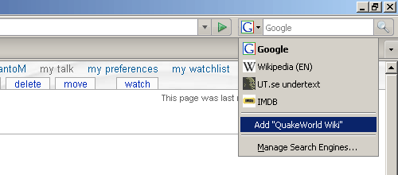
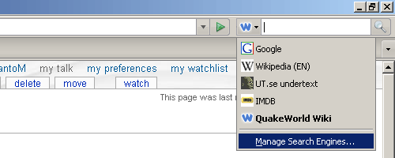
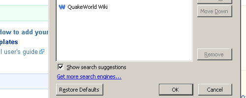
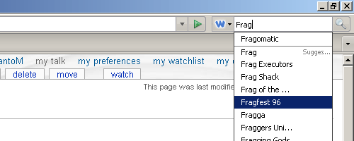

How to add QuakeWorld Wiki search plugin
Monday 24th September, 2007 | Skip to comments (5)
This tutorial will help you installing the QuakeWorld Wiki search plugin so that you can search the QuakeWorld Wiki directly from your web browser.
Step 1
Open your browser and go to QuakeWorld Wiki.
Step 2
Select the search-engine dropdown list and click add “QuakeWorld Wiki”.

Step 3
Select the dropdown list once again and click “Manage search engines”.

Click the checkbox “Show search suggestions”.

Step 4
Now it’s complete and you can try entering a keyword, for example “Frag”…

which lists suggestions for keyword “Frag*” and will display the corresponding article once clicked, neat!
It's still faster just to set your browser home page to http://wiki.qwdrama.com/Ult
:PPPP